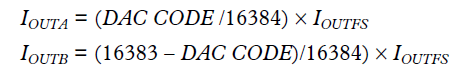
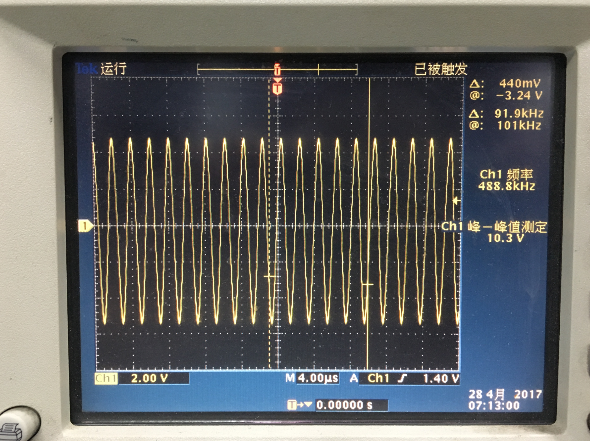

《第二十章》AD9767 双通道正弦波产生实验¶
实验Vivado工程为“ad9767_dual_sin_wave”。
本章介绍利用AN9767模块实现两路正弦波产生的实验。
20.1硬件介绍¶
双通道14位DA输出模块AN9767采用ANALOG DEVICES公司的AD9767芯片,支持独立双通道、14位、125MSPS的数模转换。模块留有一个40针的排母用于连接FPGA开发板,2个BNC连接器用于模拟信号的输出。 AN9767模块实物照片如下:

AN9767模块正面图

AN9767模块背面图
20.1.1 AN9767模块的参数说明¶
以下为AN9767双通道DA模块的详细参数:
DA转换芯片:AD9767;
通道数:2通道;
DA转换位数:14bit;
DA更新速率:125 MSPS;
输出电压范围:-5V~+5V;
模块PCB层数:4层,独立的电源层和GND层;
模块接口:40针2.54mm间距排座,方向向下;
工作温度:-40°~85° 模块使用芯片均满足工业级温度范围
输出接口:2路BNC模拟输出接口(用BNC线可以直接连接到示波器);
20.1.2 AN9767模块的原理框图¶
AN9767模块的原理设计框图如下:

20.1.3 AD9767芯片简介¶
AD9767是双端口、高速、双通道、14位CMOS DAC, 芯片集成两个高品质TxDAC+®内核、一个基准电压源和数字接口电路,采用48引脚小型LQFP封装。器件提供出色的交流和直流性能,同时支持最高125 MSPS的更新速率。AD9767的功能框图如下:

20.1.4 电流电压转换及放大¶
AD9767的两路DA输出都为补码形式的电流输出IoutA和IoutB。当AD9767数字输入为满量程时(DAC的输入的14位数据都为高),IoutA输出满量程的电流输出20mA。IoutB输出的电流为0mA。具体的电流和DAC的数据的关系如下公式所示:
其中IoutFS=32 x Iref,在AN9767模块设计中, Iref的值由电阻R16的值决定,如果R16=19.2K,那Iref的值就是0.625mA。这样IoutFS的值就是20mA。
AD9767输出的电流通过第一级运放AD6045转换成-1V~+1V的电压。具体的转换电路如下图所示:

第一级运放转换后的-1V~+1V的电压通过第二级运放变换到更高幅度的电压信号,这个运放的幅度大小可以通过调整板上的可调电阻来改变。通过第二级运放,模拟信号的输出范围高达-5V~+5V。

下表为数字输入信号和各级运放输出后的电压对照表:
DAC数据输入值 |
AD9767电流输出 |
第一级运放输出 |
第二级运放输出 |
|---|---|---|---|
3fff(14位全高) |
+20mA |
-1V |
+5V |
0(14位全低) |
-20mA |
+1V |
-5V |
2000(中间值) |
0mA |
0V |
0V |
20.1.5 电流电压转换及放大
AD9767芯片的数字接口可以通过芯片的模式管脚(MODE)来配置成双端口模式(Dual)或者交叉(Interleaved)模式。在AN9767模块设计中,AD9767芯片是工作在双端口模式,双通道的DA数字输入接口是独立分开的。双端口模式(Dual)的数据时序图如下图所示:

给AD9767芯片的DA数据通过时钟CLK和写信号WRT的上升沿输入到芯片进行DA转换。
20.2程序设计¶
例程中提供了AN9767模块的DA测试程序,通过AN9767模块来实现正弦波信号的输出。 正选波测试程序是通过读取FPGA内部的一个ROM中存储的正选波数据,然后把正选波的数据输出到AN9767模块进行数模的转换,从而得到正选波的模拟信号。正选波测试程序的示意图如下:

20.2.1生成ROM初始化文件¶
程序中我们会用到一个ROM用于存储1024个14位的正弦波数据, 首先我们需要准备ROM的初始化文件(如果是ALTERA开发板的话是mif文件,如果是Xilinx开发板的话是coe文件)。以下为生成正弦波ROM数据文件的方法: 在软件工具及驱动文件夹下找到工具,其图标如下所示:

双击.exe打开工具,打开界面如下:

可以根据需要自选波形,本例程中选择正弦波,数据长度1024,数据位宽14,其它默认:

点击保存按钮,将生成的数据文件保存到工程目录文件下(注意保存的文件类型):

保存后出现如下对话框表示保存成功,点击确定后关闭工具

将 .coe文件保存到生成的Rom IP核中即可,在字符显示实验教程中已做介绍,这里不再重复。
20.2.2 双通道正弦波发生程序¶
`timescale 1ns / 1ps
//////////////////////////////////////////////////////////////////////////////////
//Two sine wave outputs -10V ~ +10V
//////////////////////////////////////////////////////////////////////////////////
module ad9767_test
(
//Differential system clock
input sys_clk_p,
input sys_clk_n,
output da1_clk, //AD9767 CH1 clock
output da1_wrt, //AD9767 CH1 enable
output [13:0] da1_data, //AD9767 CH1 data output
output da2_clk, //AD9767 CH2 clock
output da2_wrt, //AD9767 CH2 enable
output [13:0] da2_data //AD9767 CH2 data output
);
reg [9:0] rom_addr;
wire [13:0] rom_data;
wire clk_125M;
assign da1_clk=clk_125M;
assign da1_wrt=clk_125M;
assign da1_data=rom_data;
assign da2_clk=clk_125M;
assign da2_wrt=clk_125M;
assign da2_data=rom_data;
//DA output sin waveform
always @(negedge clk_125M)
begin
rom_addr <= rom_addr + 1'b1 ; //The output sine wave frequency is 122Khz
// rom_addr <= rom_addr + 4 ; //The output sine wave frequency is 488Khz
// rom_addr <= rom_addr + 128 ; //The output sine wave frequency is 15.6Mhz
end
ROM ROM_inst
(
.clka(clk_125M), // input clka
.addra(rom_addr), // input [8 : 0] addra
.douta(rom_data) // output [7 : 0] douta
);
PLL PLL_inst
(// Clock in ports
.clk_in1_p (sys_clk_p ), // IN
.clk_in1_n (sys_clk_n ), // IN
// Clock out ports
.clk_out1 ( ), // OUT
.clk_out2 (clk_125M ), // OUT
// Status and control signals
.reset (1'b0 ), // IN
.locked ( )
);
endmodule
程序中通过一个PLL IP来产生125M的DA输出时钟,然后就是循环读取存放在ROM中的1024个数据,并同时输出到通道1和通道2的DA数据线上。程序中可以通过地址的加1,加4, 或者加128来选择输出不同的频率的正弦波。
20.3实验现象¶
将AN9767模块插入开发板的J11扩展口,用我们提供的BNC线连接AN9767的输出到示波器的输入如下图,然后开发板上电,下载程序就可以从示波器上观察从DA模块输出的模拟信号的波形了。
硬件连接图
示波器上看到的正弦波如下:

我们可以把程序中的地址修改成+4的方式,如下修改,这样一个正弦波的输出的点为256个,输出的正弦波的频率会提高4倍:

程序修改后,重新下载FPGA后,正弦波的频率变高,示波器显示的波形如下:
用户也可以通过调节AN9767模块上的可调电阻来改变2个通道输出波形的幅度。


ZYNQ MPSoC开发平台FPGA教程 - Alinx官方网站